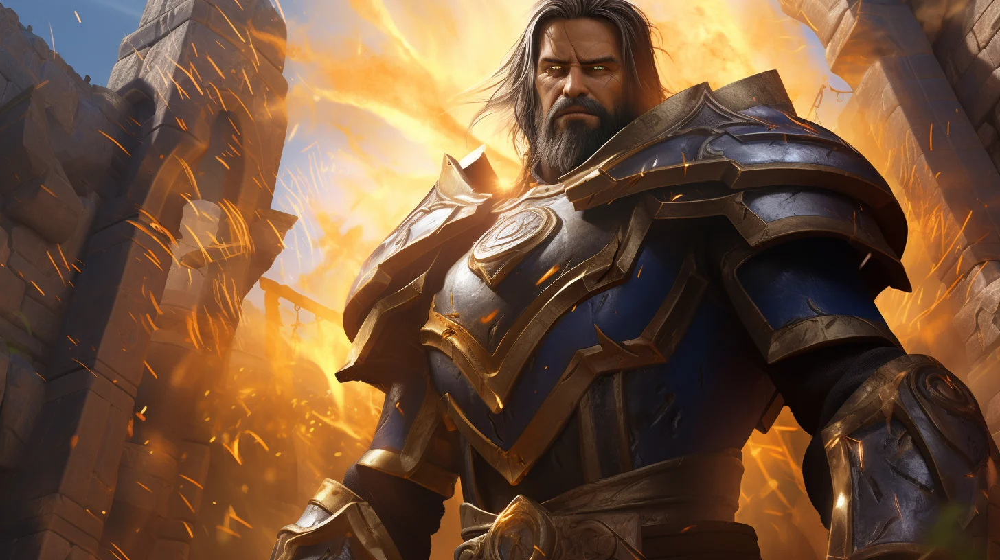
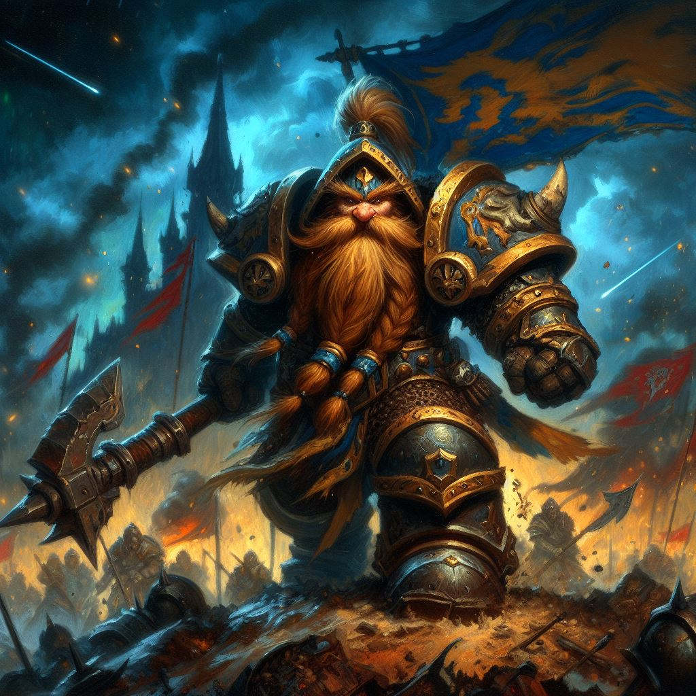
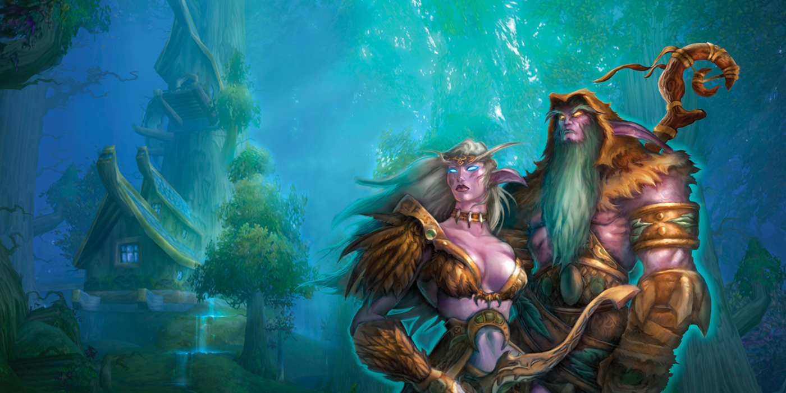
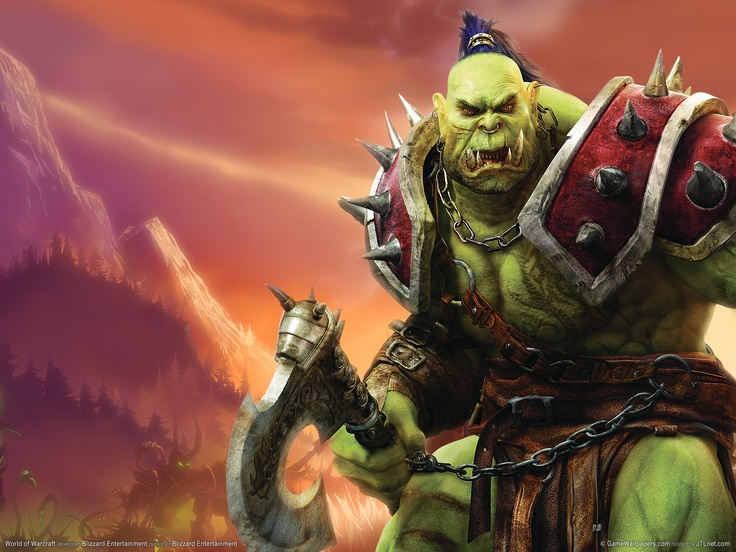
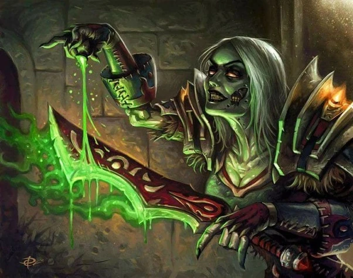
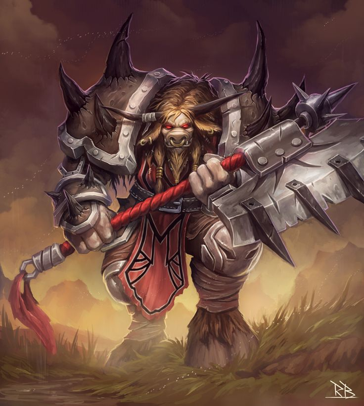
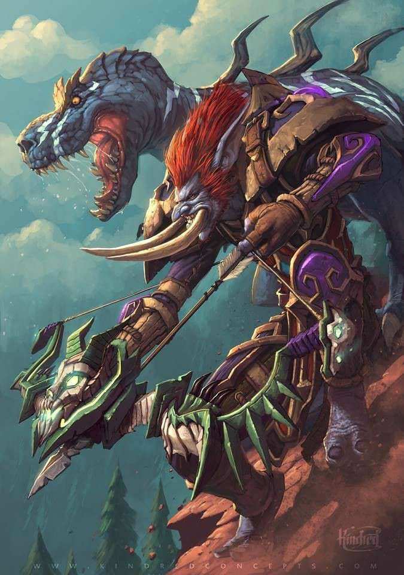

Humanos
Os humanos são a raça mais populosa e mais jovem de Azeroth. Os humanos se tornaram os líderes de fato da Aliança, com suas ambições juvenis e resiliência. Os humanos são os fundadores da Aliança. Suas habilidades diplomáticas remontam à Segunda Guerra, onde os sete reinos se uniram para derrotar a Horda.
Anões
Os anões são uma raça resistente, vinda de Khaz Modan nos Reinos Orientais. Eles podem traçar sua herança até os Titãs; uma versão mutante dos servos terrestres que se tornaram mortais pela Maldição da Carne, originalmente projetada para ajudar a moldar Azeroth. Eles hibernaram nas cidades dos Titãs por milhares de anos após a Separação, emergindo para se encontrarem mortais.
Elfos noturnos
Os elfos noturnos são uma raça misteriosa cuja sede por magia e poder criou um império antigo florescente, mas corrupto. Este império tinha um lado sombrio, atraindo a atenção da Legião Ardente. A nova geração de elfos noturnos evitou a magia arcana e, em vez disso, reconstruiu sua civilização para viver em harmonia com a natureza. Eles viveram em Kalimdor por milhares de anos, sem serem perturbados até que a árvore do mundo e sua imortalidade foram sacrificadas para deter um novo avanço da Legião Ardente antes dos eventos de World of Warcraft.
Gnomos

Os gnomos são uma raça peculiar, obcecada por gadgets e tecnologia. Eles vêm originalmente da cidade de Gnomergan, que foi destruída por Grão-faz-tudo Mekkatorque em uma tentativa de salvá-la de um exército invasor de troggs.
Orcs
Os orcs residiam originalmente no mundo de Draenor. Infelizmente, a Legião Ardente fez uso deles em uma tentativa de conquistar Azeroth — eles foram infectados com o sangue demoníaco de Mannoroth, o Destruidor, enlouquecidos e se voltaram contra os Draeneis e os habitantes de Azeroth. Depois de perder a Segunda Guerra, eles foram cortados da influência corruptora de Mannoroth e começaram a retornar às suas raízes xamãnicas. Agora, sob a liderança de seu novo Warchief, os orcs estão construindo um lar para si em Azeroth.
Mortos-vivos
 Quando o flagelo dos mortos-vivos varreu Azeroth inicialmente, eles converteram vários membros da Aliança aos mortos-vivos.
Quando as forças combinadas dos orcs, elfos, trolls, anões e humanos começaram a revidar, o controle do Lich King sobre
suas forças começou a enfraquecer. Uma pequena facção de humanos, conhecida como os Renegados, se libertou do controle do
Lich King.
Agora, livres dos laços da servidão, bem como das emoções e conexões problemáticas de suas vidas humanas, os Renegados
encontraram um novo lar — com a Horda.
Taurens
Os Taurens são criaturas enormes e bestiais que vivem nos desertos abertos e gramados de Kalimdor central. Eles vivem para servir à natureza e manter o equilíbrio entre as coisas selvagens da terra e o espírito inquieto dos elementos. Apesar de seu enorme tamanho e força bruta, os Taurens notavelmente pacíficos cultivam uma sociedade tribal tranquila. No entanto, quando despertados pelo conflito, os Taurens são inimigos implacáveis que usarão cada grama de sua força para esmagar seus inimigos sob os cascos.
Trolls
Embora existam muitas tribos diferentes de trolls espalhadas por Azeroth, apenas a Tribo Darkspear jurou lealdade à Horda. Os trolls originalmente viviam nas Ilhas Partidas, mas foram invadidos por nagas e murlocs e expulsos de seu lar. Os orcs, liderados por Thrall, salvaram a tribo Darkspear da destruição certa e ofereceram anistia a eles entre a Horda. Em troca, a tribo Darkspear jurou fidelidade ao chefe guerreiro orc.